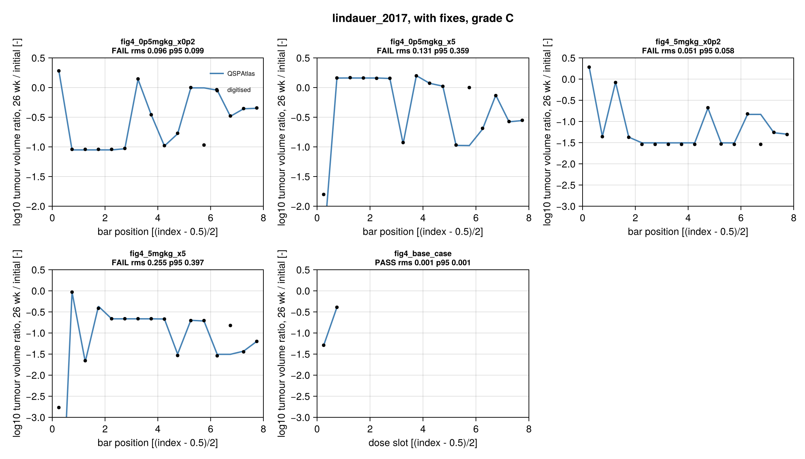

lindauer_2017: grade C
Lindauer A, Valiathan CR, Mehta K, Sriram V, de Greef R, Elassaiss-Schaap J, de Alwis DP. Translational PK/PD modeling of tumor growth inhibition supports dose-range selection of the anti-PD-1 antibody pembrolizumab. CPT Pharmacometrics Syst Pharmacol 2017;6:11-20. DOI 10.1002/psp4.12130, PMC5270293.
Reason for C: as printed, the human model lacks a human Vblood (only the mouse 1400 uL is printed), the Fig 4 base scenario and the schedule. With a documented physiological fill (5 L) plus two other fixes (one circular, `:fromtarget) the model runs, and 58 of the 64 digitised bars plus both caption base values agree (rms 0.017 log10 units, max 0.049). Six bars do not (two gamma 5x bars, four L bars), so all four bar curves fail the frozen tolerance under the vertical-error:bars` scoring and the grade is C, not B. As published (mouse V_blood) the base case is off by about 5 log10 units.
Model
Mouse (fitted) and human (translated) model share one structure (model.jl; control stream s006 $DES/$PK, supplement s001 equations). Time in hours, amounts nmol, concentrations nM, volumes L, tumour volume TV in mm^3 (= uL).
- Plasma: two compartments
A1,A2with linear CL and Michaelis-Menten (Vmax, KM) elimination, plus binding to PD-1 in blood:dA1/dt = -CL C1 - Vmax C1/(KM+C1) - PLQ (C1 - Cvs) - Q (C1 - C2) - kon A1 (C_PD1_b - PD1_b) + koff PD1_b V1. - Tumour tissue (Shah & Betts): vascular amount
Avs, interstitial amountAis, endosomal unbound/FcRn-bound concentrationsCeub,Ceb, freeFcRn. Volumes are fractions of the tumour volume: Ves 0.5 %, Vis 55 %, Vvs 7 %; plasma flow PLQ and lymph flow L scale with Vvs, pinocytosis CLup with V_es. - Target binding:
PD1_t,PD1_b= drug-receptor complex concentrations in tumour interstitium and blood,dPD1/dt = kon C (C_PD1 - PD1) - (koff + KdegPD1) PD1. Total tumour PD-1Mt(amount) has hyperbolic upregulation:dMt/dt = kin (1 + EMAXTP PD1_t/(EC50TP + PD1_t)) - kout Mt,kin = M_PD1_ti kout,C_PD1_t = Mt/V_is,C_PD1_b = N_PD1_TC N_Tcell V_blood/(N_A V1). - Tumour growth (Simeoni):
dTV/dt = L0 TV /(1 + (L0/L1 TV)^20)^(1/20) - DE TV,DE = SLtg RO_tumour^gamma,RO_tumour = 100 PD1_t/C_PD1_t(%). Human: L1 not used (exponential growth). - Human translation: human PK (Table 1), Kon/Koff of pembrolizumab and FcRn (Table 1), KdegPD1 and SLtg allometric (exponent -0.25, 20 g / 70 kg), growth rate L0 and SLtg per Table S3 scenario, baseline volume 41.5 mL.
Targets
Decision (written in notes.md before any simulation): Fig 3a central lines are not nominal simulations (caption: bands from bootstrap; Fig S1: only the sensitivity analysis uses the typical response with no uncertainty; the figure is a dose-response at 6 months, not the time course the caption suggests; its lines do not agree with the Fig 4 base values). Fig 2b and 2a have only observed medians plus a simulated band. So the grade-bearing target is Figure 4 (tornado, deterministic one-at-a-time x5 / x0.2 perturbations, log10(TV 26 wk / TV 0)):
- 4 reference CSVs (
fig4_{5mgkg,0p5mgkg}_{x5,x0p2}), 16 bars each in plotted order (parameter order in the CSV header anddigitise.toml),kind: bars, x = (index - 0.5)/2. fig4_base_case: the two caption values -1.29 (5 mg/kg) and -0.39 (0.5 mg/kg), read from the text.- Digitised by manual bar-tip picking (pixel scan, tips fixed in
digitise.toml; regenerate withreference/digitise_bars.jl). Calibration ticks -3 / 0.5 (left) and -2 / 0.5 (right); extra ticks -1 and 0 agree within 0.3 px; caption base values map to 158.75 / 485.56 px against axis lines at 159 / 486. Overlay:figures/digitise_check.png(local only: it contains the paper's figure). One pixel is 0.015 (left) / 0.010 (right) log10 units. - Tolerance: default (rms 0.015, p95 0.03 of the axis box = 0.05 / 0.04 log10 units). Frozen 2026-11-04 09:47-09:48 IST, before simulations.
- Scoring:
kind: bars(vertical error at exactly the reference x; a failed or NaN simulated bar counts as the maximum error 1.0). Failed solves return NaN. Exact signed errors of the bars that are off:notes.md.
Result
From score.toml (as published; with fixes). Run settings in the "as published" column: scenario 1 of Table S3 (fast / allometric), Q3W, 70 kg, V_blood 1400 uL (the only printed value), Table 1 KdegPD1.
| curve | as published rms / p95 | pass | with fixes rms / p95 | pass | main contributors with fixes |
|---|---|---|---|---|---|
| fig45mgkgx5 | 1.000 / 1.000 | no | 0.2548 / 0.3965 | no | gamma 5x: sim -7.03 vs -2.77 (error capped at 1.0); L: sim -1.505 vs -0.82 |
| fig45mgkgx0p2 | 0.937 / 1.000 | no | 0.0510 / 0.0581 | no | L: sim -0.84 vs -1.54 |
| fig40p5mgkgx5 | 1.000 / 1.000 | no | 0.1310 / 0.3591 | no | gamma 5x: sim -2.67 vs -1.80; L: sim -0.99 vs 0.00 |
| fig40p5mgkgx0p2 | 0.939 / 1.000 | no | 0.0964 / 0.0992 | no | L: sim -0.01 vs -0.97 |
| fig4basecase | 1.000 / 1.000 | no | 0.0009 / 0.0012 | yes | sim -1.294 / -0.391 (caption -1.29 / -0.39) |
Excluding gamma 5x (2 bars) and L (4 bars): 58 bars, rms 0.017 log10 (0.005 of the box), max 0.049 log10 (0.014 of the box); each of them is within the frozen tolerance individually (max error 0.014 of the box). The model also reproduces the figure's saturation pattern (several 0.2x / 5x bars, for Tmulti, NPD1TC, Vblood, NTcell, EMAXTP, CL, PLQ, are identical in both paper (-1.54 / -0.66) and simulation (-1.505 / -0.674): RO at its ceiling).
Mouse growth term: an earlier version multiplied the transition factor by L0 twice (human runs bypass it, L1 unused); fixed to (L0/L1*TV)^20 as in s006/s001, and the mouse vehicle run (170 mm3 start, 15 and 60 days) now equals a plain ODE of the s006 growth equation to 4 decimals.
Solver: Rodas5P, abstol 1e-14, reltol 1e-9; base case identical to 6 digits with Rodas5P at 1e-16/1e-11 and FBDF (notes.md).
Fixes
human_V_blood_5L(:missing). Human blood volume is used for the PD-1 target amount in blood. No human value is printed anywhere and Table 1 has no Vblood row; s006 has 1400 uL, a 20 g mouse (70 mL/kg). Used 5 L (70 kg x 70 mL/kg). Evidence: s006 THETA(18) is the mouse value; Vblood is listed as a sensitive human parameter in the Results. Declared in the notes before running. Without it the base case is -6.0 / -4.7 instead of -1.29 / -0.39 because the target amount is 3600 times too small, RO stays near 100 % and the tumour is eradicated. This value is a model parameter, so a reviewer should judge whether physiology alone is enough evidence; the fixed-arm base case agreeing with the caption is consistent with it, but was not used to select it. Under the atlas rule a gap filled from a standard physiological constant is a valid:missingfix.KdegPD1_allometric(:typo). Table 1 gives 0.00246 1/h for man; the Methods formulaKdegPD1_mouse (70/0.02)^-0.25gives 0.002522. SLtg obeys the same rule exactly (Table S3 2.575E-06). Evidence: Methods vs Table 1. Effect on the base case: -1.302 -> -1.294 (5 mg/kg), -0.401 -> -0.391 (notes.md); the fixed-arm base values are -1.294 / -0.391. Noted before running as an inconsistency, applied after seeing its effect; the evidence is textual.scenario_med_growth(:fromtarget). The paper does not say which of the six scenarios the Fig 4 base case uses. Chosen by the two caption base values from a pre-declared grid (6 scenarios x Q3W/Q2W, Vblood 5 L): only medium growth / growth-proportional, Q3W gave -1.30 / -0.40 (next best -1.44 / -0.46). Circular for the base case; the 58 matching bars are the independent check. Because of this fix the grade would carry a dagger if it were B. The 58 matching bars are conditional on this choice, not independent of it in the strict sense.
Not applied: the s006 IF(ROtumor>0.01) DE = SLtg*ROtumor branch (tested with it on: no change at the base case, and none in the gamma 5x / 0.2x runs, -7.0273 / -2.6732 and 0.2841 / 0.2842 either way), Table 1 roundings gamma 2.3 / Tmulti 4.3 (base -1.340 / -0.418, Table S2 full-precision values used instead).
Issues found in the paper
- Fig 4 base case is not defined: scenario, schedule (Q2W/Q3W), body weight, and human Vblood are not stated; Table 1 lists no Vblood although the text and Fig 4 treat it as a parameter; Fig S1 only says "one scenario (melanoma, 1)".
- Fig 4, parameter L (lymph flow fraction): the white (5x) and black (0.2x) bars are the reverse of what the model gives. Paper: 5x -0.82 / 0.2x -1.54 (5 mg/kg), 5x 0.00 / 0.2x -0.97 (0.5 mg/kg); model: 5x -1.505 / 0.2x -0.844 and 5x -0.99 / 0.2x -0.01. The model follows the s006 lymph-flow definition (Lraw = PLQ x TVL, transport terms as in s006 DADT(3), DADT(7)); the swapped values agree with the other bars to 0.02-0.04, so a mislabelled bar pair is plausible, but this is not proven: the authors' code could define the perturbed L differently.
- Fig 4, gamma 5x (gamma = 11.4): paper -2.77 / -1.80; the model as printed gives -7.03 (tumour 0.004 mm^3) and -2.67. Unresolved. The s006 linear branch for RO <= 0.01 % was tested in these runs and changes nothing; the cause (solver behaviour, a different implementation of RO or the effect, a different perturbation) is not identified.
- Table 1 vs Table S2/S3: gamma 2.3 vs 2.28, Tmulti 4.3 vs 4.32; human KdegPD1 0.00246 vs formula 0.002522; Table S3 growth-proportional SLtg (6.247E-07, 2.886E-07) not equal to 1.98E-05 x L0 ratio (6.31E-07, 2.98E-07), while the fast one (1.542E-06) is; text says fast L0 0.009/day, Table S3 0.0088.
- s006 is the first-estimate stream, not the final run: THETA initial values (L0 0.12, L1 170, lnSLtg -10, lngamma 0.74, lnTmulti 1.4, lnEMAXTP 4.6, lnEC50TP -6.6, KdegPD1 0.02, ERRCVrot 0.77) differ from the final estimates in Table 1 / S2 (0.113, 187, 1.98E-05, 2.28, 4.32, 94.7, 1.46 nM, 0.0194, RO tumour CV 0.508). Fixed PK/Kon/Koff values agree.
- Text vs code: s001 gives
dCb/dt = -(CLup/Ves) Cvs + ...anddFcRn/dt = +(CLup/Ves) Cvs ...; s006 (and mass balance) haveCebin both terms. The s001 central-compartment equation is truncated (onlykoff PD1b V1), the interstitial equation text lacks the Kon term parentheses. s006 has the extraIF(ROtumor>0.01)branch. - Table 1: V2 described as "central compartment" volume; Fig 1 legend calls Ce_b the "pembrolizumab:PD-1 complex in the endosomal space" (it is the FcRn-bound antibody); SLtg unit "%/day" vs "1/%day"; L1 "uL/day" vs "mm3/day".
- Methods says the sensitivity response was "percentage change from baseline in tumour volume"; Fig 4 plots log10 ratio. Fig 3a caption says "over 6 months" but the x axis is dose.
- Dose handling in humans (bolus vs infusion, body weight) is not stated; bolus and 70 kg used (no effect at the 26 week readout).
What would raise the grade
- The authors' MATLAB scenario file: base scenario, schedule, V_blood, and how L and gamma were perturbed (this would settle the L swap and gamma 5x bars). With the L row corrected and gamma 5x explained, the four bar curves would be near the tolerance; the remaining offsets are 0.01-0.05 log10 (rounded Table S3 values).
- A stated base case would remove the circular
:from_targetfix (B instead of B-dagger) and a stated human V_blood the:missingfix. - Fig 3a targets would need the central-line definition (nominal or bootstrap median) and the human bootstrap parameter table.
Data note (not in the repo)
Licence of article and supplements: CC BY-NC-ND 4.0 (XML <permissions>); the dataset s007.csv is not copied here. It is a 22-row stub (header + study 3832 IDs 2001-2008 only, all DV values .): it holds NO observations, so it cannot be used for a Turing recalibration. Column layout (for a real dataset): STUDY, ID, TAFD (days after first dose), TAI, TAFDH (h), TAIH, AMT (ug), AMTM, DV, EVID, VARID (1 = plasma PK mg/L, 2 = tumour volume mm3, 3 = RO blood, 4 = RO tumour), DOSE (mg/kg), BQL, LNDV.
Review
Independent review, 2026-11-04. The review argued for D (no human blood volume in the paper); the final decision is C: under the atlas rule (docs/src/method.md) a gap filled from a standard physiological constant (human blood volume 5 L) is a valid :missing fix, and the reproduction still does not match. Fixes made in the review round:
- Mouse growth term had L0 applied twice; now
(L0/L1*TV)^20as in s006/s001 (checked against a plain ODE; human runs unaffected). - Failed solves return NaN (no finite stand-in) and score as maximum error.
- Targets switched to
kind: barswith simulated values at exactly the reference x (step-function encoding removed); scores and tables above regenerated, grade C unchanged. - Wording: line 5 no longer says the model cannot be run; baseline values reported as -1.294 / -0.391; L swap and gamma 5x explanations softened; RO <= 0.01 % branch also tested in the gamma runs (no effect).
Comparison with digitised figure points

Score file
Generated by reproduce.jl; source: models/lindauer_2017/score.toml.
as published
| curve | figure | RMS | P95 | tolerance (RMS / P95) | pass |
|---|---|---|---|---|---|
fig4_0p5mgkg_x0p2 | Figure 4 right panel, 0.5 mg/kg, bar for parameter multiplied by 0.2x | 0.939 | 1.0 | 0.015 / 0.03 | no |
fig4_0p5mgkg_x5 | Figure 4 right panel, 0.5 mg/kg, bar for parameter multiplied by 5x | 1.0 | 1.0 | 0.015 / 0.03 | no |
fig4_5mgkg_x0p2 | Figure 4 left panel, 5 mg/kg, bar for parameter multiplied by 0.2x | 0.9372 | 1.0 | 0.015 / 0.03 | no |
fig4_5mgkg_x5 | Figure 4 left panel, 5 mg/kg, bar for parameter multiplied by 5x | 0.9998 | 1.0 | 0.015 / 0.03 | no |
fig4_base_case | Figure 4 caption, log ratio at the base parameter values: 5 mg/kg (x = 0.25) and 0.5 mg/kg (x = 0.75) | 1.0 | 1.0 | 0.015 / 0.03 | no |
with fixes
| curve | figure | RMS | P95 | tolerance (RMS / P95) | pass |
|---|---|---|---|---|---|
fig4_0p5mgkg_x0p2 | Figure 4 right panel, 0.5 mg/kg, bar for parameter multiplied by 0.2x | 0.09641 | 0.09915 | 0.015 / 0.03 | no |
fig4_0p5mgkg_x5 | Figure 4 right panel, 0.5 mg/kg, bar for parameter multiplied by 5x | 0.131 | 0.3591 | 0.015 / 0.03 | no |
fig4_5mgkg_x0p2 | Figure 4 left panel, 5 mg/kg, bar for parameter multiplied by 0.2x | 0.05096 | 0.05812 | 0.015 / 0.03 | no |
fig4_5mgkg_x5 | Figure 4 left panel, 5 mg/kg, bar for parameter multiplied by 5x | 0.2548 | 0.3965 | 0.015 / 0.03 | no |
fig4_base_case | Figure 4 caption, log ratio at the base parameter values: 5 mg/kg (x = 0.25) and 0.5 mg/kg (x = 0.75) | 0.000906 | 0.001171 | 0.015 / 0.03 | yes |
Source: models/lindauer_2017/